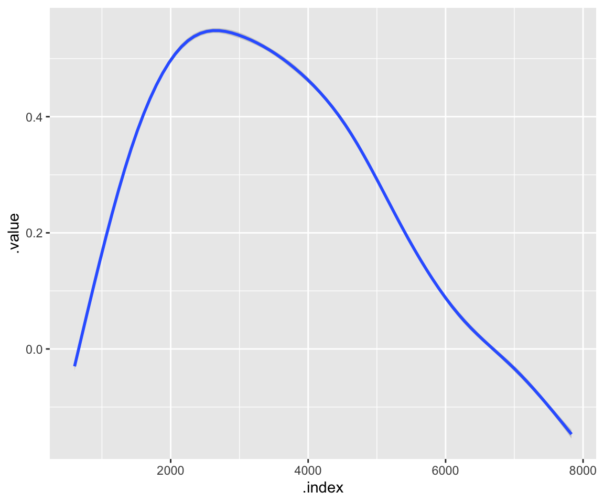
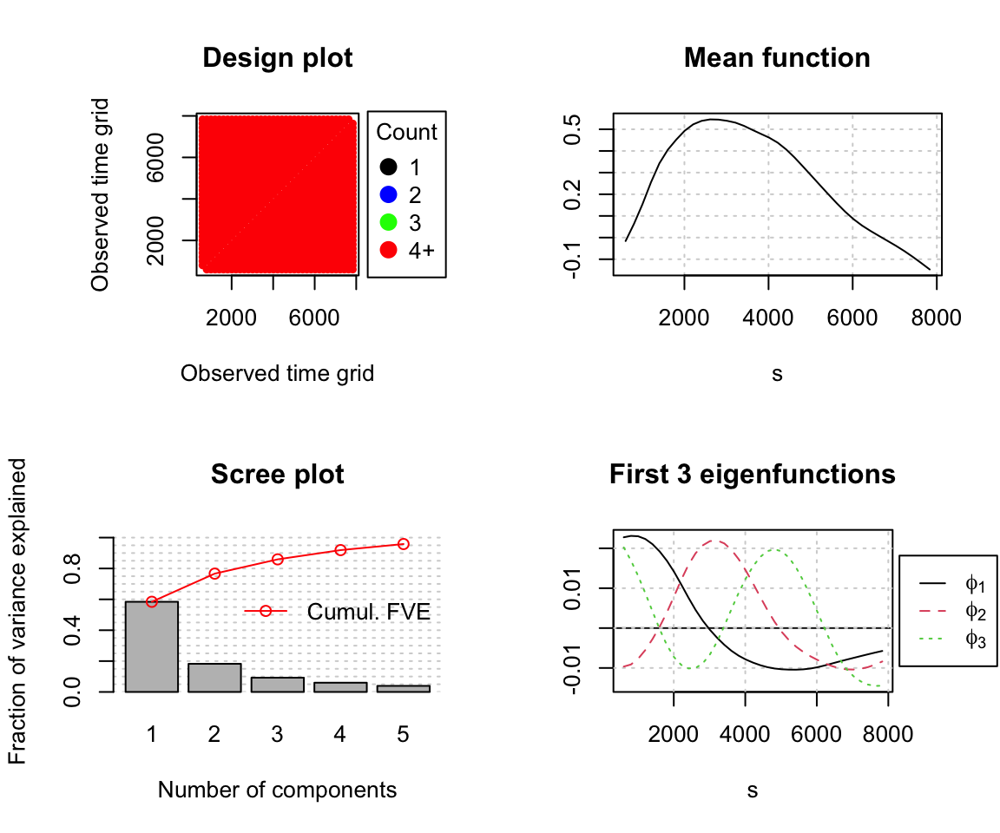
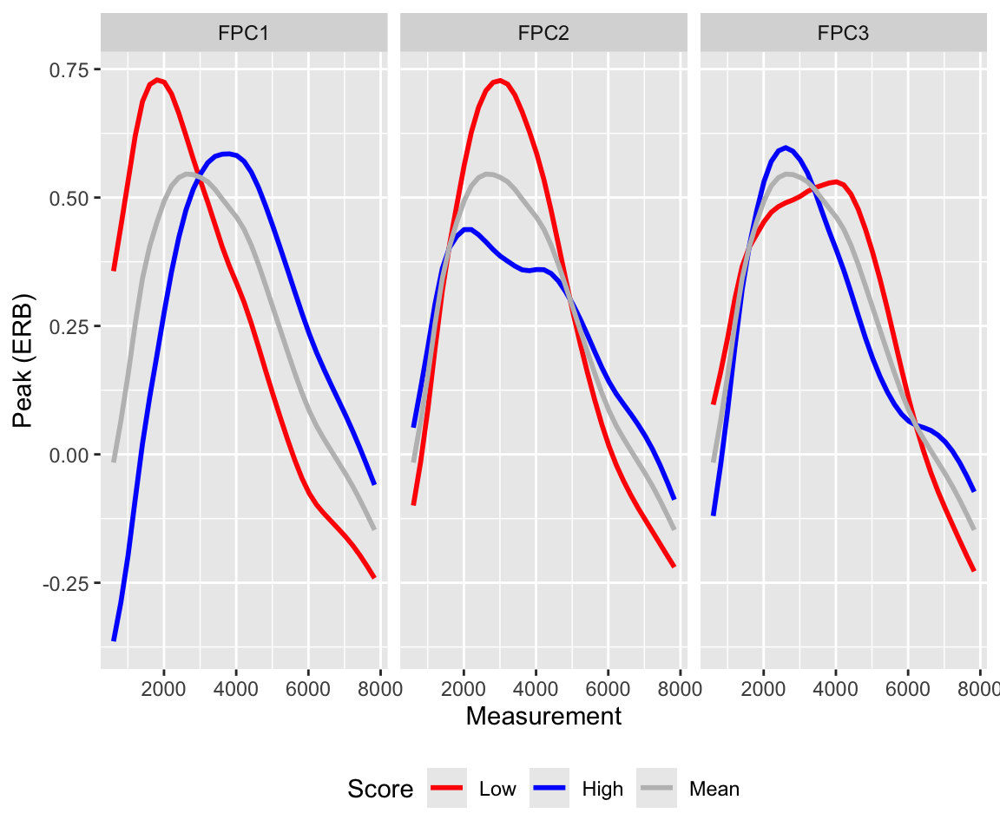
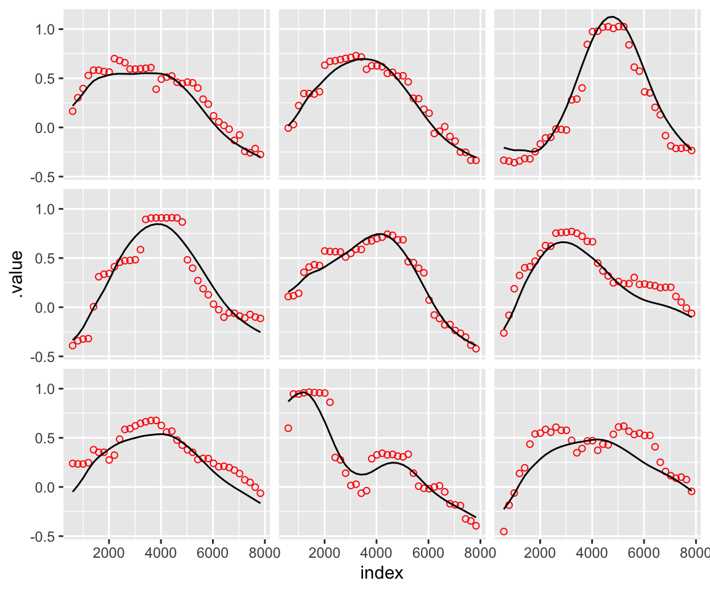
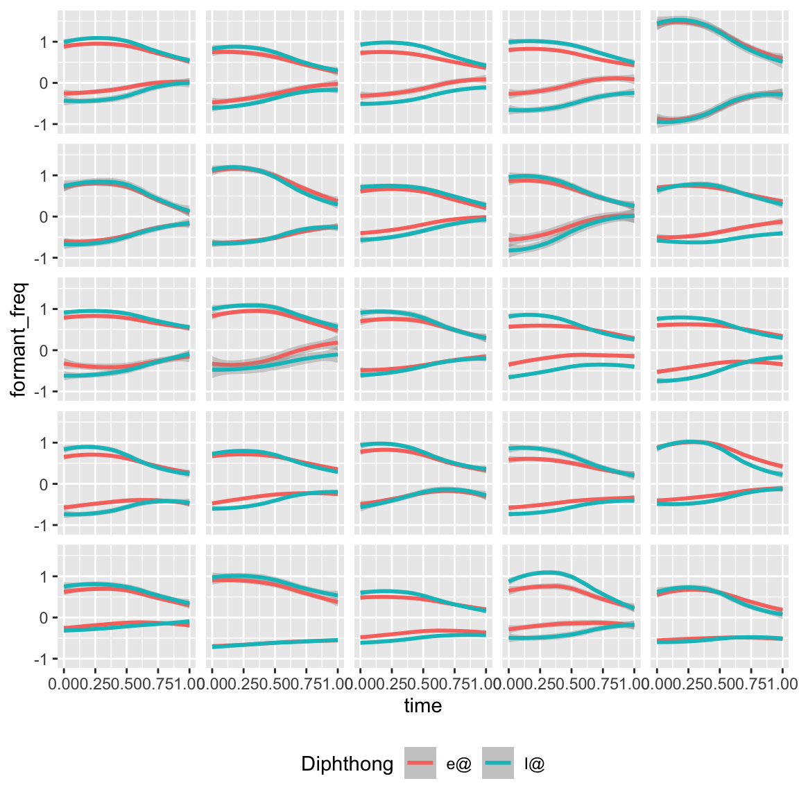
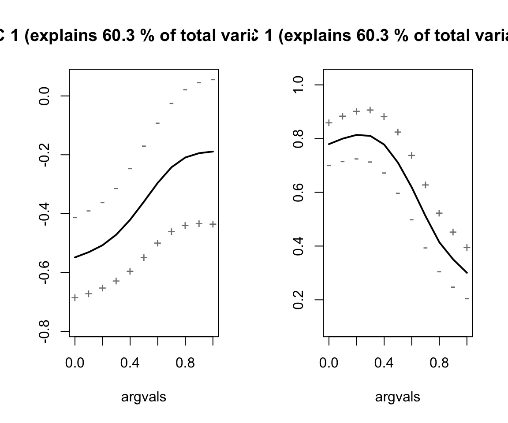
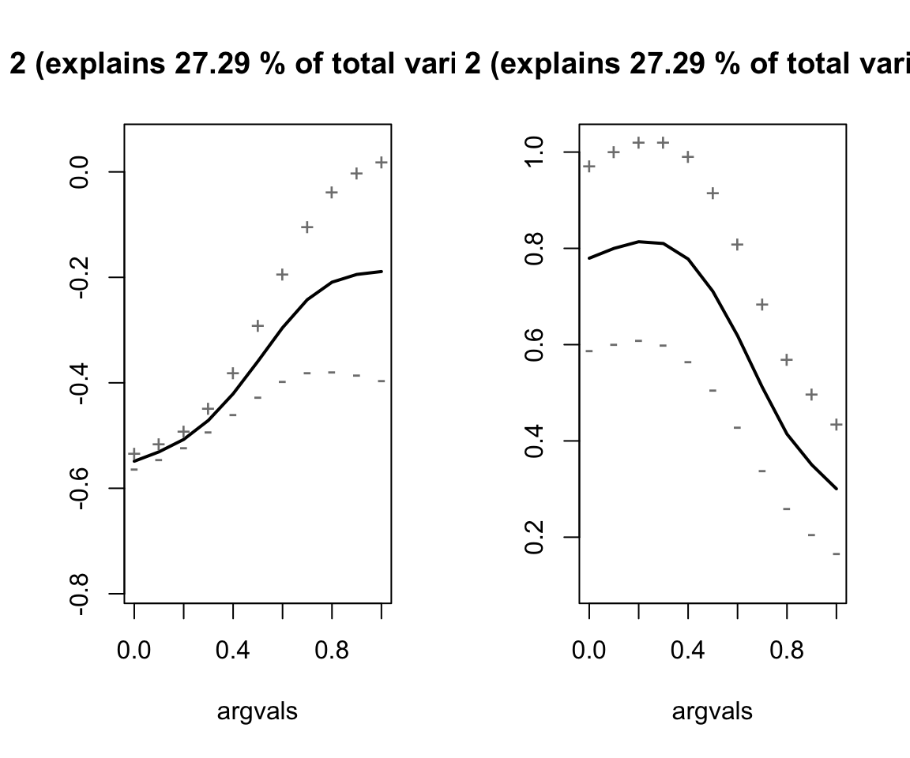
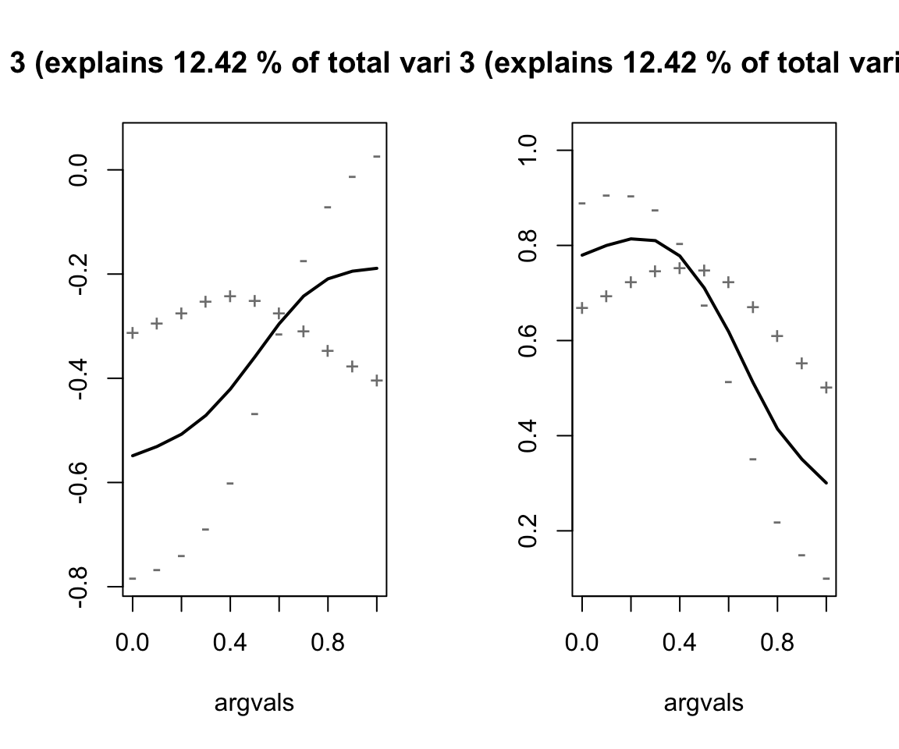

library(tidyverse)
library(fda)
library(fdapace)
library(MFPCA)
library(mgcv)
select <- dplyr::select
# Install this package if need be
# devtools::install_github('uasolo/landmarkregUtils')
library(landmarkregUtils)13 Functional principal components analysis
Author: Massimo Lipari
This tutorial gives a brief overview of functional principal components analysis (FPCA) for linguistic data using existing R packages. We use data from Puggaard-Rode (2023) and Gubian et al. (2019).
13.1 Preliminaries
Load libraries we will need:
We use several new packages for FPCA and multivariate FPCA:
- fda (Ramsay 2024)
- fdapace (Zhou et al. 2024)
- MFPCA (Happ and Greven 2018; Happ-Kurz 2022)
13.1.1 Data
13.1.1.1 Danish /t/ releases
We’ll be working with two publicly available datasets, replicating parts of the analysis from the associated papers (with some extensions). The first is from Puggaard-Rode (2023): this is a study of the release of the voiceless coronal stop /t/ in Danish, which is variably aspirated or affricated. Each datapoint is the spectrum a /t/ release, where amplitude (in decibels) is a function of frequency (in Hz) measured at 37 frequency bands.
Let’s load the data and do some pre-processing. (The data can be found here, under the heading for Ch. 6. Much of the code in this section is taken with minimal modifications from the Quarto notebook associated with the paper.):
# Read in the data
affric <- read_delim('fda_data/affric.csv', delim = ';', locale = readr::locale(encoding = 'ISO-8859-1'))
participant_info <- read_csv('fda_data/participant_info.csv', locale = readr::locale(encoding = 'ISO-8859-1'))
danish_stops <- left_join(affric, participant_info)
# Convert character vectors to factors
for (col in c(
'height', 'round', 'pal', 'stress', 'gender', 'parish', 'backness')){
danish_stops[[col]] <- as.factor(danish_stops[[col]])
}
# Collapse backness distinction to two levels
danish_stops <- danish_stops %>%
mutate(bkn2l = case_when(
backness == 'front' | backness == 'central' ~ 'nbk',
TRUE ~ 'bk')) %>%
mutate(bkn2l = as.factor(bkn2l))
# Read in the multitaper spectra
spectra <- read_csv('fda_data/yind_log.csv')
# Filter to only /t/
danish_t <- danish_stops %>%
filter(stop == 't') %>%
mutate(new_id = seq.int(nrow(filter(danish_stops, stop == 't'))))Here, we simply restrict the domain of the function to the range slightly to help avoid spurious effects: intrusive voicing from a previous or following segment can appear below 500 Hz, and the effects of aspiration/affrication above 8000 Hz are not likely to be of interest.
# Filter the spectra dataframe to only /t/
t_spectra <- danish_t %>%
inner_join(spectra) %>%
filter(.index > 500 & .index < 8000) %>% # Filter to a sensible frequency range
select(-c(.obs, ...1)) %>%
rename(.obs = new_id)13.1.1.2 New Zealand English near–square merger
The second dataset comes from Gubian et al. (2019), a study of a change in progress in New Zealand English which is causing the diphthongs /ɪə/ (lexical set near) and /eə/ (lexical set square) to merge. Here, each observation is a pair of formant tracks (F1 and F2), measured at 11 evenly spaced points: formant frequency (in Lobanov 1971 normalized units) is a function of time (in units of relative duration).
The data can be found in this GitHub repository, which is also the source of much of the code used here.
# Load the data
nze <- read_csv('fda_data/NZE.csv')
# Convert character vectors to factors
nze <- nze %>%
mutate(across(c(Diphthong, Region, Age, Sex, Speaker, Word, Phrase, Age2), ~as.factor(.x)))
nze$Age <- factor(nze$Age, levels = c('Young', 'MidAge', 'Old'))
nze$Age2 <- factor(nze$Age2, levels = c('Younger', 'older'))
# Add a column for the measurement point
nze$time <- rep(seq(0, 1, length.out = 11), nrow(nze)/11)
# Add a column for token duration
nze <- nze %>%
mutate(duration = max(time_ms), .by = tokenId)13.2 Basics of FPCA
13.2.1 Functional data in linguistics
Speech production and perception and both fundamentally time-dynamic processes. Think, for example, of how formants or pitch change across vowels or words. This dynamic information is an important cue to all sorts of contrasts. There are also other kinds of functions in linguistic data: we’ve already seen the example of spectra, which are functions in the frequency domain.
Exercise 13.1 What are some other examples of functional linguistic data that come to mind?
Most linguistic analyses rely solely on point measures (e.g., formants at vowel midpoint), which may or may not be good representations of the trajectories. In some cases, there may even be considerable disagreement about what a reasonable point measure would be (this is notably the case for fricative spectra, for example). Functional data can be challenging to work with directly, however, since they are inherently high-dimensional. This forms part of the motivation for functional principal components analysis (FPCA), which allows arbitrary functions to be represented with only a few parameters.
13.2.2 Functional principal components analysis (FPCA)
Principal components analysis is used to project a set of points (usually in a high-dimensional space) into a new coordinate space, such that:
Data are centered on the mean of each dimension,
The first dimension (principal component 1, or PC1) is the single dimension which accounts for the largest possible proportion of variance in the data. All dimensions are ranked in decreasing order of proportion of variance explained.
All dimensions are orthogonal to one another.
It is often described as (moving the origin and) ‘rotating the axes’. A somewhat less intuitive way of thinking about it (which may, however, make the analogy with FPCA clearer) is this: each point in the original space is being decomposed into a weighted sum of the vectors describing the mean and each of the principal components. FPCA similarly allows a set of functions to be represented as a linear combination of the mean and of a series of orthogonal functions, each capturing a diminishing proportion of variance in the data.
Both PCA and FPCA allow for several different kinds of research questions to be investigated. One common use case is for subsequent regression analysis, where PC scores can be used in place of or in addition to other measures. For example, we can fit a linear regression model to examine which variables predict PC scores along a given dimension, or we can fit a logistic regression model to investigate how well PC scores predict a certain contrast of interest. Alternatively, the dimensions of variation (the principal components themselves) and their relative importance may be of interest.
14 Adavantages and limitations
FPCA (like regular PCA) is commonly used for dimensionality reduction: it is often possible to achieve a good approximation of the original data using only the first few (functional) principal components, allowing the others to be discarded to simplify the analysis. In this sense, it can be likened to discrete cosine transforms (DCTs), which decompose functions into sums of cosine functions of increasing numbers of half periods, also used in linguistic analyses. The major difference between the two approaches is that for DCTs, the shapes of the components are entirely predictable, whereas in FPCA, the shapes of the components is completely arbitrary and learned from the data. This comes with a tradeoff: DCT components are guaranteed to have certain interpretations, but may or may not capture a relevant dimension of variation in the data; FPCA components are guaranteed to be the best at capturing variation in the data, but there is no guarantee that they will be easy to interpret or theoretically interesting.
In the simplest case, FPCA requires all inputted functions to have the same domain. This requirement may not be satisfied by all kinds of data: for example, different vowel tokens in a corpus will in general have different durations. A simple solution is to convert absolute time measures into relative ones: this loses information about the duration of the token, however, which itself is often an important variable. Duration must thus somehow be reincorporated into the analysis somewhere else.
14.1 Affrication of /t/ releases in Danish
Danish /t/ is variably aspirated (realized as [tʰ]) or affricated (realized as [t^s]). Per Puggaard-Rode (2023),
The acoustics of alveolar frication and aspiration are well-understood. In alveolar frication, a jet of air impinges on a hard surface (the upper front teeth) immediately in front of the coronal constriction, resulting in noise in a broad range of high frequencies (mainly above 4 kHz) (Stevens 1993). In aspiration, lower frequency turbulence noise in a narrower frequency range (mainly below 1 kHz) is generated at and near the glottis (Stevens 1998). This noise is filtered through the supraglottal cavity, where the resonance frequencies of the following vowel significantly affect the resulting noise.
Let’s take a look at the dataset:
t_spectra %>%
glimpse()
## Rows: 188,885
## Columns: 21
## $ parish <fct> Agerskov, Agerskov, Agerskov, Agerskov, Agerskov, Agerskov, …
## $ token <chr> "tæ2", "tæ2", "tæ2", "tæ2", "tæ2", "tæ2", "tæ2", "tæ2", "tæ2…
## $ cog <dbl> 4305, 4305, 4305, 4305, 4305, 4305, 4305, 4305, 4305, 4305, …
## $ vot <dbl> 63.3, 63.3, 63.3, 63.3, 63.3, 63.3, 63.3, 63.3, 63.3, 63.3, …
## $ pal <fct> negpal, negpal, negpal, negpal, negpal, negpal, negpal, negp…
## $ height <fct> mid, mid, mid, mid, mid, mid, mid, mid, mid, mid, mid, mid, …
## $ backness <fct> front, front, front, front, front, front, front, front, fron…
## $ round <fct> negrd, negrd, negrd, negrd, negrd, negrd, negrd, negrd, negr…
## $ stop <chr> "t", "t", "t", "t", "t", "t", "t", "t", "t", "t", "t", "t", …
## $ stress <fct> str, str, str, str, str, str, str, str, str, str, str, str, …
## $ parishno <dbl> 3074, 3074, 3074, 3074, 3074, 3074, 3074, 3074, 3074, 3074, …
## $ tape_id <dbl> 395, 395, 395, 395, 395, 395, 395, 395, 395, 395, 395, 395, …
## $ birthyear <dbl> 1883, 1883, 1883, 1883, 1883, 1883, 1883, 1883, 1883, 1883, …
## $ gender <fct> male, male, male, male, male, male, male, male, male, male, …
## $ year <dbl> 1972, 1972, 1972, 1972, 1972, 1972, 1972, 1972, 1972, 1972, …
## $ dialect <chr> "Søn", "Søn", "Søn", "Søn", "Søn", "Søn", "Søn", "Søn", "Søn…
## $ rec_age <dbl> 89, 89, 89, 89, 89, 89, 89, 89, 89, 89, 89, 89, 89, 89, 89, …
## $ bkn2l <fct> nbk, nbk, nbk, nbk, nbk, nbk, nbk, nbk, nbk, nbk, nbk, nbk, …
## $ .obs <int> 1, 1, 1, 1, 1, 1, 1, 1, 1, 1, 1, 1, 1, 1, 1, 1, 1, 1, 1, 1, …
## $ .index <dbl> 601.6667, 802.5000, 1003.3333, 1204.1667, 1405.0000, 1605.83…
## $ .value <dbl> -0.60640837, -0.55430433, -0.48678129, -0.21229655, 0.273846…The main variables of interest here are:
.obs: A unique identifier for each spectrum,.index: The center frequency of the spectral bin associated with a given measurement,.value: The amplitude measure at a given spectral bin,vot: The voice onset time (in ms) of the stoptoken: A phonetic transcription for the syllable that the token comes from, used to determine:
pal: Whether the stop is palatalized or not.height: The height of the following vowel (high, mid, or low)bkn2l: The backness of the following vowel (back or non-back)round: The roundness of the following vowel (rounded or unrounded)stress: Whether the token comes from a stressed or unstressed syllable
parish: The place of origin of the speaker who produced the token. There’s only a single speaker from each parish, so this also uniquely identifies each speaker.
Let’s see what the average spectrum looks like:
t_spectra %>%
ggplot(aes(x = .index, y = .value)) +
geom_smooth()
## `geom_smooth()` using method = 'gam' and formula = 'y ~ s(x, bs = "cs")'
Exercise 14.1 Make some exploratory plots to examine how different variables affect the shape of the spectrum. Why do you think those variables have an effect?
14.1.1 Fitting the FPCA and unpacking the output
We’ll be using the function FPCA() from the fdapace to fit the FPCA. This function takes two lists of vectors as inputs (Ly and Lt, containing the y and x values, respectively), where each vector corresponds to one functional observation. We can use the convenience function MakeFPCAInputs() in fdapace to wrangle our long form dataframe of spectra into this format.
Options for the FPCA can be passed as a named list to the optns parameter of FPCA(). Setting methodMuCovEst = 'smooth' will enable smoothing of the functions before fitting (which is often useful in limiting spurious effects due to noise in the data): methodBwCov = 'GCV' will use generalized cross-validation to determine the correct degree of smoothness. Finally, the FVEthreshold (FVE = fraction of variance explained), indeirectly determines the number of FPCs: enough dimensions to account for at least that percentage of the variation in the data will be computed (default is 0.99, but we’ll use 0.95 here.)
For more options, see the fdapace vignette or the function’s documentation, by running the command ?FPCA().
# Make the FPCA inputs
t_input <- with(t_spectra,
MakeFPCAInputs(IDs = .obs, # A unique ID for each observation
tVec = .index, # The x value of the measure (in this case, the frequency bin)
yVec = .value) # The y value of the measure (in this case, the amplitude value)
)
# Run the FPCA
fpca_t <- with(t_input,
FPCA(Ly, Lt,
optns = list(dataType = 'Dense',
methodMuCovEst = 'smooth', # Smooth the data (not the default for dense data)
methodBwCov = 'GCV', # Estimate the degree of smoothing required via generalized cross-validation
FVEthreshold = 0.95)) # Find a solution with enough principal components to explain 95% of the variance
)
fpca_t %>% plot()
Running the plot function on the FPCA object produces some useful summary metrics:
Design plot: This shows how individual measurements are spaced across the x axis (called ‘time grid’ in the plot, but actually the frequency domain in our example). It serves as a sanity check that the inputted data look the way they’re supposed to: here, we have many observations along the frequency dimension (37 bins) and they’re all equally spaced, so our data is said to be dense. FPCA also works with sparse data, but fitting can be more complex or prone to problems.
Mean function: As the name suggests, this is the average of all (smoothed) observations. (You can check for yourself that this indeed looks like the mean spectrum we plotted earlier with ggplot2.) This is stored in the FPCA object as $mu.
Scree plot: This will be familiar to you if you’ve used plain PCA before. The bars on this plot give the FVE by each given PC, and the connected red dots give the running sum of the FVE up to a given PC. The total FVE and the list of cumulative FVE values are stored in the FPCA object as $FVE and $cumFVE, respectively. If we want to calculate the FVE associated with a particular PC, we can use this function:
# A convenience function for getting the FVE for a given set of principal components (by default, for all FPCs)
FVE <- function(fpca_obj, fpcs = 1:fpca_obj$selectK) {
return(c(fpca_obj$cumFVE[1], diff(fpca_obj$cumFVE))[fpcs])
}
fpca_t %>% FVE()
## [1] 0.58418897 0.18240035 0.09251821 0.05992529 0.03934014We see that the majority of the variance is capture by a single dimension (FPC1). FVE rapidly drops off FPC2, to the point that FPC4 and 5 aren’t contributing much. When several FPCs have similarly low FVE like this, it’s often a sign that they’re picking up on noise rather than signal.
A plot of the first three eigenfunctions: This is the meat and potatoes of the FPCA, showing the shape of the three functions which have been determined to explain the largest proportion of variance and which are used to calculate principal component scores. It can be hard to interpret the eigenfunctions just by looking at them: it’s thus often useful to visualize their modifying effect on the mean function.
To do this, we simply multiply the eigenfunction by some arbitrary value and add it to the mean. To get a good sense of the range of variability found in our data, we can use quantiles of PC scores along that dimension calculated from the data: for example, if we choose the first and third quartiles, it would mean that half of the observations vary along that PC within the range described by those two curves. The following convenience function makes it easy to do just that, allowing the user to specify which FPCs are of interest and which quantiles to use.
# A convenience function for visualizing the effects of FPCs, adapted from Puggaard-Rode (2023)
plot_fpc_effects <- function(fpca_obj, fpcs = 1:fpca_obj$selectK, range = c(0, 1)) {
vals <- data.frame()
for (fpc in fpcs) {
vals <- vals %>%
rbind(data.frame(fpc = paste0('FPC', fpc),
measurement = fpca_obj$obsGrid, mu = fpca_obj$mu,
highq = fpca_obj$mu + quantile(fpca_obj$xiEst[, fpc], range[2]) * fpca_obj$phi[, fpc],
lowq = fpca_obj$mu + quantile(fpca_obj$xiEst[, fpc], range[1]) * fpca_obj$phi[, fpc]))
}
vals <- vals %>%
mutate(fpc = fpc %>% as.factor()) %>%
pivot_longer(cols = c(mu, highq, lowq))
plt <- vals %>%
ggplot(aes(x = measurement, y = value, colour = name)) +
geom_line(linewidth = 1) +
facet_wrap(~fpc, ncol = 3) +
xlab('Measurement') +
ylab('Peak (ERB)') +
scale_colour_manual(values = c('red', 'blue', 'gray'),
name = 'Score',
labels = c('Low', 'High', 'Mean')) +
theme(legend.position = 'bottom')
return(plt)
}
fpca_t %>%
plot_fpc_effects(fpcs = 1:3, range = c(0.25, 0.75))
Here, the first quantile (low value) is plotted in red, the third quantile (high value) in blue, and the mean in grey. Note that the sign of any given dimension is arbitrary, and can be flipped without affecting the fit (this may sometimes facilitate interpretation).
From these plots, we see that FPC1 primarily affects the spectral peak: peak frequency varies monotonically (low values = lower frequency, high values = higher frequency), but peak amplitude does not (amplitude is highest at low values, drops towards the mean and increases again at high values). FPC2 simultaneously affects peak amplitude and peak prominence (low = higher amplitude and more prominent peak, high = lower amplitude peak and more of a plateau). Conversely, FPC3 captures joint change in peak frequency and peak prominence (low = higher frequency, less prominent peak, high = lower frequency, more prominent peak).
Exercise 14.2 Try running the FPCA again, but this time without smoothing the functions (set methodMuCovEst = 'cross-sectional' in the optns() parameter). How does this change the results?
14.1.2 Extracting and interpreting FPC scores
FPC scores are contained in a matrix, stored in the FPCA object as xiEst. We can make pulling them out and adding them back to our original dataframe a little easier with the following function:
# A convenience function to pull the FPC scores out of the FPCA object and store them in the original dataframe
extract_fpc_scores <- function(df, fpca_obj, fpcs = 1:fpca_obj$selectK) {
for (fpc in fpcs) {
df <- df %>%
mutate('fpc{fpc}' := fpca_obj$xiEst[,fpc]) # Creates a column `fpcx`, where x = fpc, for the scores
}
return(df)
}
danish_t <- danish_t %>%
extract_fpc_scores(fpca_t)Exercise 14.3 Building off what was learned previously, make some exploratory plots to determine which variables are predictive of FPC1, FPC2 and FPC3 scores.
Exercise 14.4 Try and fit a simple, reasonable linear model for FPC1, FPC2, and FPC3 scores, using the predictors which seemed important in the previous question. (Separate univariate models are fine for our purposes, although a single multivariate model would in principle be better.)
14.1.3 Reconstructing functions from FPC scores
Let’s now try to reconstruct the original spectra using the mean function and the first three principal components.
# Join in the extracted FPC scores
t_spectra <- t_spectra %>%
left_join(danish_t %>% select(new_id:fpc5), by = c('.obs' = 'new_id'))
# Create a dataframe with the mean and the principal components
fpcs <- with(fpca_t,
data.frame(.index = obsGrid,
mu = mu,
FPC1 = phi[, 1],
FPC2 = phi[, 2],
FPC3 = phi[, 3])) %>%
mutate(index = floor(.index)) %>% # Gets around a floating point precision issue
select(-.index)
t_spectra <- t_spectra %>%
mutate(index = floor(.index)) %>% # Gets around a floating point precision issue
left_join(fpcs, by = 'index')
# Generate the reconstructed measures
t_spectra <- t_spectra %>%
mutate(reconstructed = mu + fpc1 * FPC1 + fpc2 * FPC2 + fpc3 * FPC3)
# Take a small subsample of curves for visualization
set.seed(76)
trajs <- t_spectra$.obs %>% sample(9)
t_spectra_samples <- t_spectra %>%
filter(.obs %in% trajs)
# Plot the observed values vs reconstructed curves
t_spectra_samples %>%
ggplot(aes(x = index)) +
geom_point(aes(y = .value), colour = 'red', shape = 1) +
geom_line(aes(y = reconstructed), colour = 'black') +
facet_wrap(~.obs) +
theme(strip.text = element_blank())
The measured frequency values are represented by the red dots, whereas the reconstructed spectra are represented by the solid black line. As expected, the first three PCs offer a fair, but not perfect, approximation of the original data.
14.1.4 Introducing controls
The results of the previous FPCA tell us what the most important dimensions of variation are across the entire dataset. However, we’ve used heavily imbalanced corpus data, which may skew the results. We may, moreover, be particularly interested in certain kinds of variability—for example, inter-speaker variability, rather than variability due to the phonological environment.
In these cases, we can fit a model to control for certain variables, make marginal predictions for the given variable of interest, and run the FPCA on those predictions rather than on the empirical data. Here’s a reasonable GAMM for the data, controlling for gender, the VOT of the stop, and the following vowel:
# Some more data wrangling
t_spectra <- t_spectra %>%
mutate(start.event = ((row_number() - 1 %% 37) == 0),
token = token %>% as.factor(),
gender.ord = gender %>% as.ordered(),
vot.std = vot %>% arm::rescale())
contrasts(t_spectra$gender.ord) <- contr.treatment(n = 2)
# Fit a first model without an AR1 error model
danish_mod1 <- t_spectra %>%
bam(.value ~ gender.ord +
s(.index, bs = 'cr') + s(.index, by = gender.ord, bs = 'cr') +
s(vot.std, bs = 'cr') + ti(.index, vot.std, bs = 'cr') +
s(.index, parish, bs = 'fs', xt = 'cr', k = 5, m = 1) +
s(.index, token, bs = 'fs', xt = 'cr', k = 5, m = 1),
data = ., method = 'fREML', discrete = TRUE)
danish_mod2 <- t_spectra %>%
bam(.value ~ gender.ord +
s(.index, bs = 'cr') + s(.index, by = gender.ord, bs = 'cr') +
s(vot.std, bs = 'cr') + ti(.index, vot.std, bs = 'cr') +
s(.index, parish, bs = 'fs', xt = 'cr', k = 5, m = 1) +
s(.index, token, bs = 'fs', xt = 'cr', k = 5, m = 1),
data = ., method = 'fREML', discrete = TRUE,
rho = itsadug::start_value_rho(danish_mod1), AR.start = .$start.event)
danish_mod2 %>%
write_rds(file = 'fda_data/danish_mod2.rds')The model has been fitted in advance in order to save time, so let’s load it now.
danish_mod2 <- read_rds('fda_data/danish_mod2.rds')
danish_mod2 %>% summary()
##
## Family: gaussian
## Link function: identity
##
## Formula:
## .value ~ gender.ord + s(.index, bs = "cr") + s(.index, by = gender.ord,
## bs = "cr") + s(vot.std, bs = "cr") + ti(.index, vot.std,
## bs = "cr") + s(.index, parish, bs = "fs", xt = "cr", k = 5,
## m = 1) + s(.index, token, bs = "fs", xt = "cr", k = 5, m = 1)
##
## Parametric coefficients:
## Estimate Std. Error t value Pr(>|t|)
## (Intercept) 0.256054 0.011237 22.787 <2e-16 ***
## gender.ord.L 0.009974 0.010799 0.924 0.356
## ---
## Signif. codes: 0 '***' 0.001 '**' 0.01 '*' 0.05 '.' 0.1 ' ' 1
##
## Approximate significance of smooth terms:
## edf Ref.df F p-value
## s(.index) 8.774 8.896 35.109 < 2e-16 ***
## s(.index):gender.ordmale 7.758 8.433 8.541 < 2e-16 ***
## s(vot.std) 7.467 8.401 3.826 7.94e-05 ***
## ti(.index,vot.std) 12.217 13.601 24.379 < 2e-16 ***
## s(.index,parish) 940.227 1062.000 42.661 < 2e-16 ***
## s(.index,token) 167.855 249.000 12.770 < 2e-16 ***
## ---
## Signif. codes: 0 '***' 0.001 '**' 0.01 '*' 0.05 '.' 0.1 ' ' 1
##
## R-sq.(adj) = 0.49 Deviance explained = 49.3%
## fREML = -1.1695e+05 Scale est. = 0.079677 n = 188885We then use the mgcv::predict.bam() function to make by-speaker predictions for the smooth over frequency, marginalizing over all other predictors (including gender.ord), which are then stored in the dataframe parish_df. These will allow us to examine the dimensions of residual inter-speaker variability (i.e., that which is not explained by gender). (You don’t need to worry too much about the details of the code here. This probably isn’t the cleanest way to make these predictions.)
# Create a dataframe for predictions
parish_df <- t_spectra %>%
distinct(parish, .index) %>%
mutate(vot.std = 0)
# Make predictions
parish_df$gender.ord <- 'male'
parish_pred_male <- danish_mod2 %>%
predict.bam(parish_df,
terms = c('(Intercept)',
'gender.ord',
's(.index)',
's(.index):gender.ordmale',
's(vot.std)',
's(.index,parish)'),
newdata.guaranteed = TRUE,
discrete = FALSE)
parish_df$gender.ord <- 'female'
parish_pred_female <- danish_mod2 %>%
predict.bam(parish_df,
terms = c('(Intercept)',
'gender.ord',
's(.index)',
's(.index):gender.ordmale',
's(vot.std)',
's(.index,parish)'),
newdata.guaranteed = TRUE,
discrete = FALSE)
parish_df$pred <- (parish_pred_male + parish_pred_female)/2
parish_df <- parish_df %>%
select(-gender.ord)We’re now ready to run the FPCA on the by-speaker predictions in parish_df.
Exercise 14.5 Using the previous example as a template, carry out FPCA on the by-speaker predictions. (Note that there’s no need to smooth the functions this time, since the GAMM has already done this for us. Extract the FVE for each of the first three principal components, and create a plot to visualize the effects of the eigenfunctions on the mean. How do the results compare to those from the original FPCA?
14.2 near–square merger in New Zealand English
Let’s take a look at the dataset:
nze %>%
glimpse()
## Rows: 46,442
## Columns: 14
## $ tokenId <dbl> 1, 1, 1, 1, 1, 1, 1, 1, 1, 1, 1, 2, 2, 2, 2, 2, 2, 2, 2, 2, …
## $ Diphthong <fct> I@, I@, I@, I@, I@, I@, I@, I@, I@, I@, I@, e@, e@, e@, e@, …
## $ time_ms <dbl> 0.00000, 10.00000, 20.00000, 30.00000, 40.00000, 50.00000, 6…
## $ Region <fct> Hamilton, Hamilton, Hamilton, Hamilton, Hamilton, Hamilton, …
## $ Age <fct> MidAge, MidAge, MidAge, MidAge, MidAge, MidAge, MidAge, MidA…
## $ Sex <fct> female, female, female, female, female, female, female, fema…
## $ Speaker <fct> h007, h007, h007, h007, h007, h007, h007, h007, h007, h007, …
## $ Word <fct> years, years, years, years, years, years, years, years, year…
## $ F1 <dbl> -0.80419952, -0.80092751, -0.79765550, -0.78238614, -0.74094…
## $ F2 <dbl> 0.9653225, 0.9622437, 0.9591649, 0.9043064, 0.8886326, 0.780…
## $ Phrase <fct> nonfinal, nonfinal, nonfinal, nonfinal, nonfinal, nonfinal, …
## $ Age2 <fct> Younger, Younger, Younger, Younger, Younger, Younger, Younge…
## $ time <dbl> 0.0, 0.1, 0.2, 0.3, 0.4, 0.5, 0.6, 0.7, 0.8, 0.9, 1.0, 0.0, …
## $ duration <dbl> 100.0000, 100.0000, 100.0000, 100.0000, 100.0000, 100.0000, …The most important variables here are:
tokenId: A unique identifier for each token,time: The timepoint (in relative duration) that the measurement comes from,F1,F2: The formant values,Diphthong: The underlying vowel that the token comes from (I@= [ɪə],e@= [eə]),Age2: The age group the spaker belongs to (old or young).Phrase: Whether the token is phrase-final or not (relevant because sound changes are often more advanced phrase-finally than non-finally).
Let’s look at a sample of 25 speakers and see how they vary in terms of the realization of the near–square contrast:
set.seed(26)
speakers <- unique(nze$Speaker) %>%
sample(25)
nze_sub <- nze %>%
filter(Speaker %in% speakers) %>%
mutate(Diphthong = Diphthong %>% as.factor())
nze_sub_long <- nze_sub %>%
pivot_longer(cols = c(F1, F2),
names_to = 'formant',
values_to = 'formant_freq')
nze_sub_long %>%
ggplot(aes(x = time, y = formant_freq, colour = Diphthong, group = interaction(Diphthong, formant))) +
geom_smooth() +
facet_wrap(~Speaker, ncol = 5) +
theme(strip.text = element_blank(),
legend.position = 'bottom')
## `geom_smooth()` using method = 'loess' and formula = 'y ~ x'
We immediate see that there is variation in terms of whether a given speaker:
- Has maintained the contrast or not—and if so, over what proportion of the time interval the contrast can be seen,
- Marks the contrast with just F1, just F2, or both.
14.2.1 Multivariate FPCA
We thus need a dynamic metric that accounts for the patterns of covariation in F1 and F2. Multidimensional FPCA (MFPCA) does just that, simultaneously determining the functions which capture the most variance for each dimension. Although there’s a different set of PCs for each dimension, there is a single set of PC scores which affect both dimensions jointly.
We’ll be using the package MFPCA and its MFPCA() function here. It works somewhat differently from fdapace::FPCA(), notably requiring the input functions to be in a different format. We’ll use the long2irregFunData() function from Michele Gubian’s package landmarkregUtils, as well as the function funData::as.funData(), to covert our long dataframe to the correct format. We need to create two separate funData objects, which we will then combine into a single multiFunData object.
# Create the inputs
nze_f1 <- long2irregFunData(nze,
id = 'tokenId',
time = 'time',
value = 'F1') %>%
as.funData()
nze_f2 <- long2irregFunData(nze,
id = 'tokenId',
time = 'time',
value = 'F2') %>%
as.funData()
nze_inputs <- multiFunData(list(nze_f1, nze_f2))The options for MFPCA() are also specified in a slightly different way. Instead of passing a desired FVE threshhold, we supply the desired number of PCs.
# Run the MFPCA
nze_mfpca <- MFPCA(nze_inputs,
M = 3,
uniExpansions = list(list(type = 'uFPCA'), list(type = 'uFPCA')))
# Get summary plots
nze_mfpca %>%
plot(combine = TRUE)


Describe the effects of each of the principal components.
Exercise 14.6 Try and fit two univariate FPCAs on the nze data, one for F1 and one for F2. How do they differ from the compare to the MFPCA?
14.2.2 Extracting FPC scores
Here’s a convience function for getting the FPC scores out of the model, very similar to the one for univariate FPCA:
# Create a dataframe with one row per observation
nze_tokens <- nze %>%
distinct(tokenId, Diphthong, Region, Age, Sex, Speaker, Word, Phrase, Age2, duration)
# A convenience function similar to `extract_fpc_scores` above
extract_mfpc_scores <- function(df, fpca_obj, fpcs = 1:(fpca_obj$normFactors %>% length())) {
for (fpc in fpcs) {
df <- df %>%
mutate('fpc{fpc}' := fpca_obj$scores[,fpc]) # Creates a column `fpcx`, where x = fpc, for the scores
}
return(df)
}
# Extract scores
nze_tokens <- nze_tokens %>%
extract_mfpc_scores(nze_mfpca)Exercise 14.7 Which FPCs contribute the most to the near–square distinction in NZE? Do we see evidence of a merger in progress?